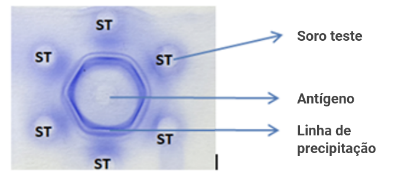
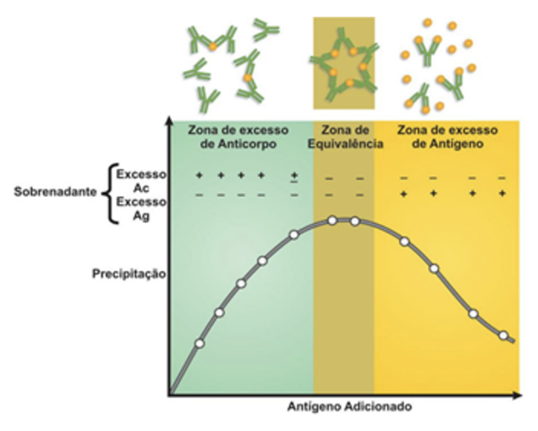
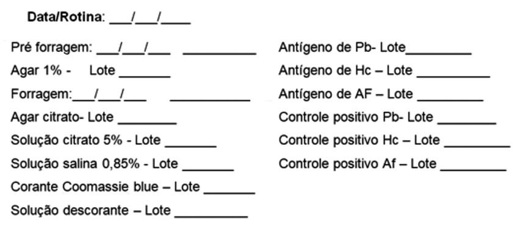
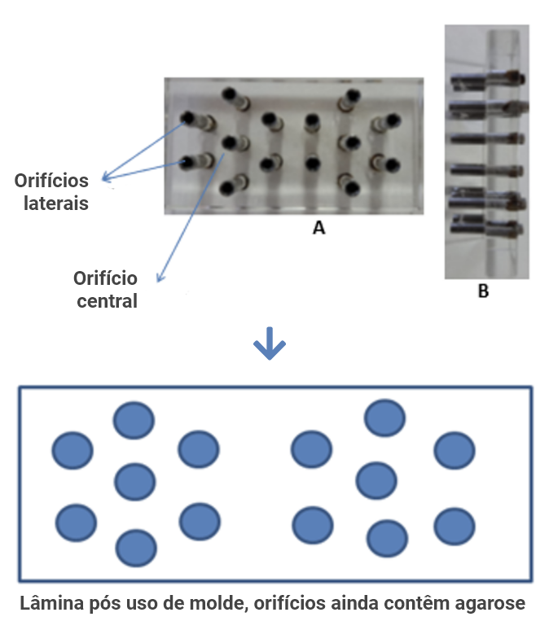
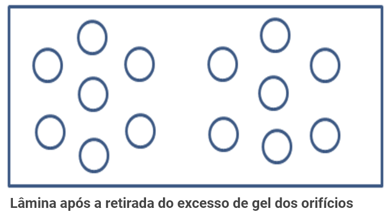
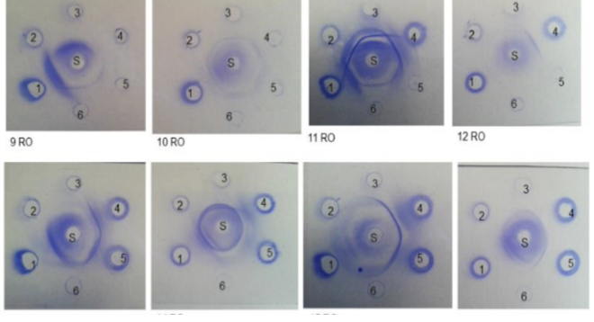
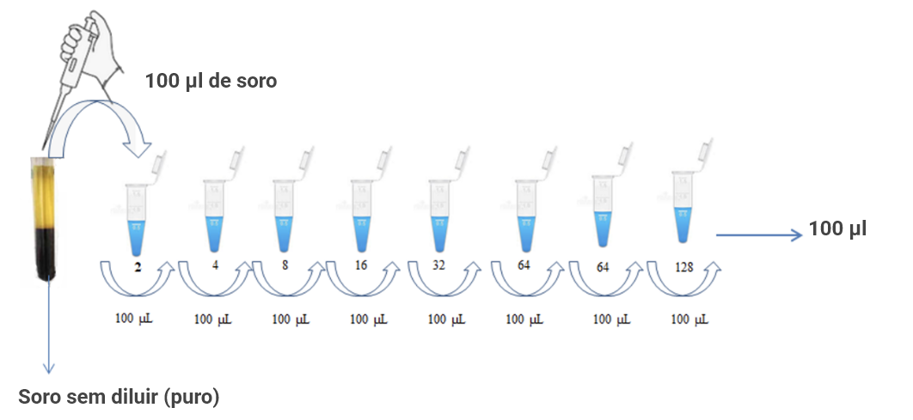
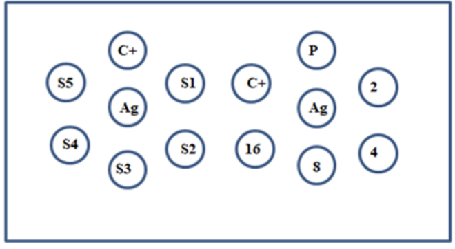
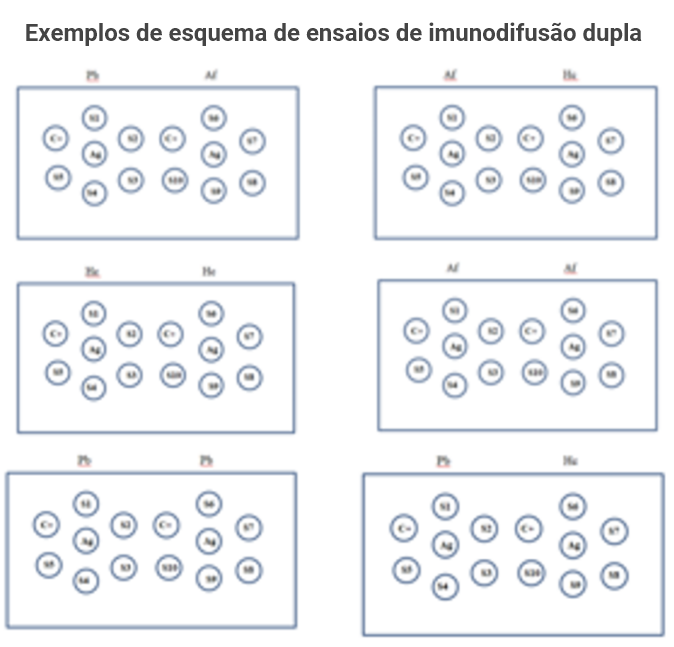
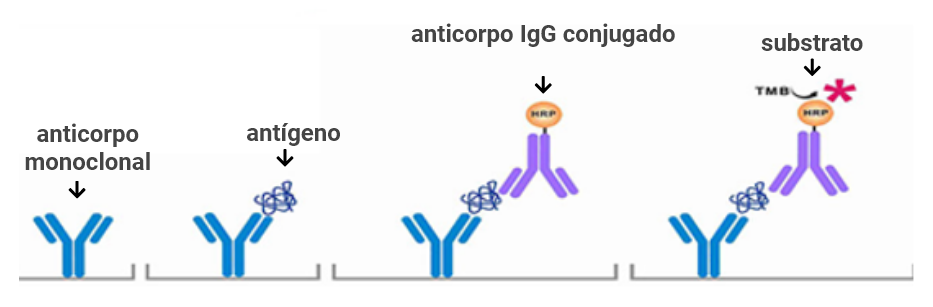

Aula 6
Exames de imunodiagnóstico
Os métodos de imunodiagnóstico representam ferramentas importantes no apoio ao diagnóstico das micoses, especialmente em situações nas quais o isolamento do agente etiológico é difícil ou demorado. Técnicas como imunodifusão, testes imunoenzimáticos e imunocromatográficos ampliam as possibilidades diagnósticas, oferecendo maior rapidez e apoio à investigação laboratorial.
Imunodifusão
A imunodifusão dupla em gel de agarose é um ensaio de precipitação utilizado para detectar anticorpos produzidos contra antígenos solúveis. Trata-se de um ensaio clássico, confiável, de fácil exequibilidade técnica, pouco oneroso e que não exige parque tecnológico complexo ou automação, sendo particularmente útil para detectar a presença de anticorpos policlonais em amostras de soro humano e animal.
Originalmente foi desenvolvido por Ouchterlony (1948) para avaliar a produção de toxina diftérica por isolados bacterianos clínicos. Esse método continua a ser usado rotineiramente na identificação de respostas de anticorpos em infecções clínicas (Herren et al. 2016), podendo-se citar como exemplo a pesquisa de anticorpos circulantes anti-Paracoccidioides spp., anti-Histoplasma capsulatum e anti-Aspergillus spp.
Os ensaios de difusão em gel estão entre os métodos mais antigos utilizados para detectar anticorpos específicos e para medir antigenicidade (Ouchterlony; Nilsson, 1986), pois ainda são métodos úteis para detectar anticorpos específicos. No entanto, eles requerem altas concentrações de antígeno e anticorpo e são relativamente insensíveis a anticorpos com baixas afinidades.
Nesse ensaio, à medida que o anticorpo e o antígeno migram, um em direção ao outro, e formam gradientes de difusão que se cruzam, uma linha de imunoprecipitação pode se formar entre os orifícios, indicando a presença de anticorpos específicos.
![Um círculo verde e figuras
verdes em formato de “Y” que saem do círculo e vão para o lado direito, na
parte inferior apontando para o lado branco da imagem, que está escrito “Matrix
do Agar”, no topo está escrito “anticorpo” com uma seta apontando para o lado
direito, no lado direito há um círculo amarelo com pequenos círculos laranjas
saindo dele, indo em direção ao lado esquerdo, no topo está escrito “antígenos”
com uma seta apontando para o lado esquerdo, no centro da imagem há um
faixa chamada “precipitado”, quando anticorpo e antígeno se encontram.](../assets/images/modulo2/aula6/img1.png)

A formação das linhas de precipitação depende de diversos fatores, mas, de modo geral, pode-se dizer que é dada pela difusão natural das moléculas sobre um gel de agarose. A velocidade de difusão do antígeno em direção ao anticorpo é regida pelas leis da difusão e está intimamente relacionada à concentração e ao tamanho das moléculas, ao tamanho dos poros da malha do gel de agarose, da temperatura, da umidade, da concentração e da pureza da agarose. Normalmente, o processo de difusão é lento, podendo levar de 24 a 48 horas, o que pode ser uma desvantagem quando se pensa em diagnóstico rápido.
Para que a reação de precipitação seja visível, deve haver uma relação de equivalência entre as concentrações do antígeno e do anticorpo. Em caso de excesso, tanto de antígeno como de anticorpo, ocorre redução na formação do precipitado. Quando equivalentes, há a formação de complexos que podem ser vistos a olho nu, tendo assim, a zona de equivalência. Quando o soro analisado apresenta alta concentração de anticorpos, estes se associam aos antígenos formando pequenos complexos, não visualizados por precipitação — ocorrendo o efeito prózona. Quando o anticorpo está pouco concentrado em relação ao antígeno, também são formados pequenos complexos — ocorrendo o efeito denominado pós-zona.
Curva de formação de imunocomplexo em função da quantidade de antígeno adicionada

Infográfico sobre a curva de formação de imunocomplexo em função da quantidade de antígeno adicionada, ele está dividido em três áreas coloridas, ao lado esquerdo está escrito “sobrenadante, excesso AC, excesso Ag e embaixo ainda do lado esquerdo está escrito “precipitação”, na parte inferior do gráfico está escrito “antígeno adicionado”. À esquerda (verde claro) é a Zona de excesso de anticorpo, na parte superior aparecem estruturas verdes em forma de “Y” com bolinhas laranjas e embaixo aparece sinais de mais (excesso AC) e menos (excesso Ag), porém próximo ao centro da imagem o excesso Ac fica com sinal de mais e menos, a precipitação está subindo, no centro (bege) é a Zona de equivalência, tanto o excesso AC quanto o excesso Ag estão negativos, a precipitação atinge um pico nessa zona, no topo as bolinhas laranjas e as estruturas verdes em forma de “Y” se juntam, à direita (amarelo) é a Zona de excesso de antígeno, onde a precipitação decai, no topo as estruturas verdes em forma de “Y” estão grudadas com as bolinhas laranjas, mas algumas bolinhas ficam soltas, o excesso AC está negativo, enquanto o excesso Ag está com sinal de positivo.Diversos fatores podem influenciar a eficácia e a sensibilidade do ensaio. Entre eles destaca-se o efeito pró-zona, que ocorre devido ao excesso de antígenos, geralmente associado à disseminação ou à gravidade da doença. Também pode haver formação de imunocomplexos, que resulta na oclusão de epítopos e dificulta a reação. Outro fator é a presença de anticorpos assimétricos, os quais inibem a ligação secundária em reações de precipitação. Além disso, níveis de anticorpos abaixo do limite de detecção da técnica podem comprometer o resultado, assim como altas concentrações de IgG2. Por fim, a qualidade da preparação antigênica é determinante para o desempenho adequado do ensaio.
Agora, vamos conhecer as vantagens e desvantagens dessa técnica clicando nos cards.
Vantagem da técnica

• Ensaio de fácil execução.
• Não necessita de automação.
• Baixo custo.
• Permite a avaliação qualitativa e semiquantitativa da amostra biológica.
• Permite a avaliação da gravidade da doença, devido à correlação direta entre o título
sorológico e o grau de gravidade da doença no paciente.
• Permite a avaliação de cura, devido à correlação direta entre a queda do título de anticorpos
circulantes e a melhora do quadro do paciente.
Desvantagem da técnica
• Longo tempo para o processo de difusão.
• Não detecta anticorpos não precipitantes.
Nota: a sensibilidade do teste é baixa em pacientes imunodeprimidos, particularmente em indivíduos com aids, naqueles que fazem uso de medicamentos imunossupressores, pacientes oncológicos e transplantados.
- Ácido acético glacial.
- Ácido clorídrico 6N ou 2N.
- Ágar purificado.
- Agarose tipo II, média eletroendosmose.
- Agitador magnético.
- Agitador tipo vórtex.
- Algodão.
- Anticorpos policlonais obtidos em coelhos (soros controles positivos) ou pool de soros humanos positivos.
- Antígenos solúveis.
- Balança.
- Balão volumétrico.
- Barras de imã.
- Bomba de vácuo ou trompa de vácuo.
- Câmara úmida (potes plásticos tipo tupperware).
- Caneta para retroprojetor ou permanente.
- Carvão ativado.
- Citrato de sódio.
- Cloreto de sódio.
- Coomassie Brilliant Blue R-250.
- Etiquetas.
- EPIs (máscara, luva e óculos de proteção).
- Estufa a 60 ºC.
- Etanol.
- Éter.
- Forno de micro-ondas ou manta aquecedora.
- Frasco âmbar de 1.000,0 mL.
- Funil de vidro.
- Freezer.
- Gaze.
- Geladeira.
- Glicina ou ácido aminoacético.
- Hidróxido de sódio 6N ou 2N.
- Lâminas de vidro lapidada, de borda fosca. 26 x76 mm.
- Lápis de grafite preto de boa qualidade (Faber Castel).
- Metanol.
- Micropipetas com capacidade de 10 a 20µL e 200 a 1000 µL.
- Molde em forma de roseta para perfurar o gel.
- Papel de filtro.
- pHmêtro.
- Pipetas sorológicas de 5 e 10 mL.
- Soros teste.
- Suporte para lâminas.
- Termômetros para aferir as temperaturas da rede fria (geladeira e freezer) e rede quente (estufa).
- Thimerosal.
- Tubos de ensaio 16 x 160 mm e 18 x 180 mm.
• Preparo dos reagentes
O preparo de reagentes e soluções é etapa essencial nos procedimentos laboratoriais, uma vez que a exatidão de suas concentrações e a qualidade de seus componentes influenciam diretamente a confiabilidade dos resultados obtidos. A seguir, vamos explorar algumas soluções.
Solução de ágar 1%
Para essa solução será necessário:
- Ágar purificado 1,0 g
- Água bidestilada ou Milli-q 100,0 mL
Pese o ágar e coloque-o em Erlenmeyer de 200,0 mL. Homogeneizar e levar ao forno de micro-ondas para fundir, tomando cuidado para não levantar fervura. Na falta de micro-ondas a fusão pode ser feita em banho-maria. Após a fusão, distribuir 10,0 mL da solução em tubos de ensaio 16 x 160 mm devidamente identificados com o nome da solução, responsável pelo preparo, data do preparo e de validade. Após polimerizar e esfriar, fechar os tubos com boneca/tampão de algodão e estocar a 4 °C.
Atenção! Essa solução pode ser estocada na geladeira por, no máximo, 10 dias; após esse período a solução tende a ficar amarelada, tornando-se imprópria para uso.
Solução de agarose citrato
Para essa solução será necessário:
- Cloreto de sódio (NaCl) 0,90 g
- Citrato de sódio (C₆H₅Na₃O₇ * 2 H₂O) 0,40 g
- Glicina 7,50 g
- Agarose tipo II EEO 1,00 g
- Thimerosal 0,01 g
- Água bidestilada (qsp) 100,0 mL
Para o preparo dessa solução deve-se primeiramente pesar o NaCl, o citrato de sódio e a glicina. Dissolver os sais acima em aproximadamente 80,0 mL de água bidestilada ou Milli-q, homogeneizar bem até a completa dissolução dos reagentes. Acertar o pH da solução entre 6,7 e 6,9. Tendo acertado o pH, distribuir a solução em uma proveta graduada e completar o volume para 100,0 mL com água Milli-q.
Em um Erlenmeyer de 250,0 mL colocar a agarose previamente pesada (1,0 g/100,0 mL), verter o conteúdo da proveta no Erlenmeyer e levar ao forno de micro-ondas para fundir. Deve-se prestar muita atenção para que a solução não entre em fervura. A solução estará fundida quando ficar transparente. Distribuir 10,0 mL da solução em tubos de 18 x 180 mm devidamente identificados com o nome da solução, responsável pelo preparo, data de preparo e data de validade. Após polimerizar e esfriar, fechar os tubos com boneca/tampão de algodão e estocar a 4 °C.
Atenção: essa solução pode ser estocada na geladeira por, no máximo, 10 dias; após esse período a solução tende a ficar amarelada, tornando-se imprópria para uso.
A glicina é usada no preparo dessa solução, pois atua quebrando imunocomplexos, de modo que, se houver algum antígeno complexado ao anticorpo, ela ajuda a quebrá-los. Além disso, a glicina melhora a sensibilidade da reação.
Solução de citrato de sódio 5% (Tampão citrato de sódio 5%)
Para essa solução será necessário:
- Citrato de sódio 50,0 g
- Água destilada 1.000,0 mL
Após o preparo da solução, distribuir em frasco âmbar, devidamente identificado com o nome da solução, responsável pelo preparo, data de preparo e data de validade. Armazenar a 4 ºC.
Solução salina 0,85% (Tampão salina)
Para essa solução será necessário:
- Cloreto de sódio 85,0 g
- Água destilada 10.000 mL
Após o preparo da solução distribuí-la em barrilete, devidamente identificado com o nome da solução, responsável pelo preparo, data de preparo e data de validade. Armazenar à temperatura ambiente.
Solução corante Coomassie brilliant blue R-250
Para essa solução será necessário:
- Coomassie brilliant blue R-250 4,0 g
- Ácido acético glacial 100,0 mL
- Etanol 450,0 mL
- Água bidestilada ou milli-q 1.000,0 mL
Em um balão volumétrico adicione o ácido acético glacial e o etanol, complete para 1.000,0 mL de água bidestilada ou milli-q. Adicione o corante. Homogeneizar lentamente em agitador magnético até a completa dissolução do corante.
Depois, filtrar em papel de filtro simples e estocar em frasco âmbar devidamente identificado com o nome da solução, responsável pelo preparo, data de preparo e de validade.
Solução descorante
Para essa solução será necessário:
- Ácido acético glacial 100,0 mL
- Etanol 450,0 mL
- Água bidestilada ou milli-q (qsp) 450,0 mL
Atenção! A solução descorante pode ser reaproveitada, para tanto basta filtrá-la em carvão ativado.
• Preparo das lâminas
A seguir são descritas as etapas recomendadas para o preparo das lâminas, contemplando os cuidados necessários.
As lâminas de vidro em solução de álcool-éter devem estar limpas; para isso, utiliza-se gaze embebida em álcool 70%, lembrando sempre de segurar pelas extremidades, evitando assim que a gordura das mãos entre em contato com a superfície da lâmina. O uso de luvas é sempre uma boa prática durante o manuseio.
Com o auxílio de um lápis preto ou marcador de vidro, realiza-se a identificação ou numeração das lâminas na parte fosca. Em seguida, faz-se o revestimento completo das lâminas com 1,0 mL de solução de ágar 1%, etapa chamada de pré-forragem.
As lâminas são, então, colocadas para secar em estufa a 60 ºC por aproximadamente 18 horas. Após a secagem, procede-se à forragem, aplicando-se 3,0 mL de ágar-citrato sobre cada lâmina.
Deixe o material solidificar em temperatura ambiente e, depois, as lâminas são colocadas em câmara úmida (recipiente plástico com algodão embebido em água destilada). Recomenda-se guardar em geladeira por, no mínimo, 2 horas antes do uso.
Por fim, elabore o protocolo do ensaio a ser executado (mapa de trabalho) em folha contendo o molde esquemático das lâminas. No lado esquerdo, marca-se o número correspondente à lâmina; nos orifícios superior e inferior, o tipo de controle positivo; nas laterais, os números dos soros testes; e no centro, o antígeno. É importante lembrar de anotar a data de execução da técnica e o nome do laboratorista responsável.
Sugestão de esquema para mapa de trabalho (frente folha)
![Imagem composta por frente e folha de uma sugestão de esquema para mapa
de trabalho. Logo abaixo, à esquerda, está escrito “Identificação de lâmina”
com uma seta apontando para uma faixa vertical na lateral de um retângulo,
que representa uma lâmina, há quatro desenhos semelhantes de lâminas
distribuídos em duas linhas, cada lâmina é um retângulo horizontal, dentro
delas há pequenos círculos organizados em grupos, abaixo de cada lâmina
existe uma tabela com as informações nas colunas: leitura, amostras e Data,
nas linhas da tabela aparecem: 48hs, Final, Visto 1, Visto 2.](../assets/images/modulo2/aula6/img4.png)
Sugestão de esquema para mapa de trabalho (frente folha)

• Execução da técnica
Para essa técnica você deve fazer os orifícios no gel de agarose. Estes são feitos com o auxílio de um molde, tipo "gel punch" ou similar, em forma de roseta de aproximadamente 3,0 cm de diâmetro contendo seis (6) orifícios laterais e um central.

Imagem de um Molde de Imunodifusão com vista superior (imagem A) e vista Lateral (imagem B), na imagem A, aparece uma placa transparente com vários pinos metálicos organizados em fileiras. Setas azuis indicam os “Orifícios laterais” saindo da ponta do pino e o “Orifício central”, com a seta saindo do meio do pino, na imagem B, aparece uma visão lateral do mesmo molde, mostrando os pinos alinhados horizontalmente. No centro da imagem há uma seta azul apontando para baixo. Na parte inferior aparece um desenho esquemático de uma lâmina retangular com vários círculos azuis distribuídos em grupos, abaixo do desenho está escrito: Lâmina pós uso de molde, orifícios ainda contêm agarose.Após ter escavado o gel, retire o excesso dele com uma agulha ou bomba/trompa de vácuo.

Aplique 12μL de cada reagente biológico nos orifícios de acordo com a posição marcada no esquema com o auxílio de pipeta automática. A aplicação deve "obrigatoriamente" acontecer na seguinte ordem:
- 1ºSoros testes, ou seja, amostras de soro dos pacientes com suspeita clínica e/ou em acompanhamento sorológico.
- 2ºControle positivo da reação. O controle positivo pode ser um anticorpo policlonal obtido em coelho antiantígeno espécie-específico. Ex.: antígeno de Paracoccidioides spp. e anticorpo policlonal antiantígeno de Paracoccidioides spp.
- 3ºAntígeno que deve ser aplicado no orifício central.
![Ilustração de um retângulo representando uma lâmina. Dentro dele há vários
círculos distribuídos em duas colunas com siglas, cada coluna possui sete
círculos, com um no centro e seis em volta. O C+ aparece no canto superior
esquerdo das duas colunas e o Ag permanece no centro das duas colunas, na
primeira coluna do topo seguindo para a direita está o S1, S2, S3, S4, S5 e por
último C+, na segunda coluna do topo seguindo para a direita está o S6, S7,
S8, S9, S10 e por último C+. Abaixo do retângulo, há um esquema simplificado
do processo, há uma barra horizontal azul que representa a “Lâmina de vidro”,
enquanto a área acima está identificada como “Gel de agarose”, o Ac possui
uma seta que vai para o lado esquerdo, em direção ao Ag (que está no centro)
que vai novamente para o lado esquerdo, para o Ac, mas o Ag possui outra
seta que vai para o lado direito em direção ao Ac.](../assets/images/modulo2/aula6/img8.png)
Em seguida, faça a leitura de 24 e 48 horas, anotando no esquema a presença ou ausência de linhas de precipitação.

Com o auxílio de uma bomba de vácuo, o excesso de controle positivo, soros testes e antígeno de cada um dos orifícios de ambas as rosetas deve ser aspirado. Para evitar que a agarose se desprenda da lâmina de vidro, cada lâmina deve ser delicadamente enrolada em um pedaço de gaze ou papel-filtro.
A lavagem deve ser realizada com tampão citrato de sódio 5% por 45 minutos, à temperatura ambiente. Após o tempo de lavagem, o tampão citrato de sódio 5% deve ser desprezado.
A lavagem deve ser feita com tampão salino 0,85% por 24 horas, à temperatura ambiente, sendo recomendada a realização de, no mínimo, oito (8) trocas de tampão salina a cada 60 minutos.
Após esse período, com o auxílio de uma bomba de vácuo, o excesso de tampão salina dos orifícios de ambas as rosetas deve ser aspirado.
Com o auxílio de uma pipeta Pasteur de vidro, os orifícios devem ser vedados com ágar-citrato e deve-se esperar a solidificação. Essa etapa é extremamente importante, pois impede que o gel se "rache" quando as lâminas forem colocadas em estufa a 60 ºC por, pelo menos, 18 horas.
As lâminas devem ser envelopadas em papel de filtro, etapa que deve ser realizada sempre em água corrente. Para isso, folhas de papel de filtro (10,0 cm de altura x 12,0 cm de comprimento) devem ser cortadas e cada lâmina deve ser envelopada individualmente, tomando cuidado para que não se formem bolhas.
As lâminas envelopadas em papel de filtro devem ser colocadas em estufa a 60 ºC para secar por, no mínimo, 18 horas. Nessa etapa, ocorre a desidratação da lâmina, permanecendo uma fina camada de agarose aderida a ela. O papel de filtro deve ser retirado, também em água corrente, tomando cuidado para não remover a camada de gel junto com o papel.
As lâminas devem ser coradas com Coomassie Blue por cinco (5) minutos. O excesso de corante deve ser lavado. As lâminas devem ser deixadas em solução descorante por 10 minutos. O excesso de descorante deve ser lavado e as lâminas devem ser deixadas para secar antes da leitura.
A leitura definitiva deve ser realizada com o auxílio de um negatoscópio, sendo recomendada a participação de dois observadores.
![Ilustração de um retângulo representando uma lâmina. Dentro dele há vários
círculos distribuídos em duas colunas com siglas, cada coluna possui sete
círculos, com um no centro e seis em volta. O C+ aparece no canto superior
esquerdo das duas colunas e o Ag permanece no centro das duas colunas, na
primeira coluna do topo seguindo para a direita está o S1, S2, S3, S4, S5 e por
último C+, na segunda coluna do topo seguindo para a direita está o S6, S7,
S8, S9, S10 e por último C+. Abaixo do retângulo, há uma barra horizontal azul
que representa a “Lâmina de vidro”, enquanto a área acima está identificada
como “Gel de agarose”, no lado esquerdo está escrito “Ac”, a lâmina de vidro
está com uma seta que que diz “soro reagente”, no centro e lado direito está
escrito “Ag” e “Ac”, o soro desses dois é “não reagente”.](../assets/images/modulo2/aula6/img10.png)

Oito fotografias pequenas organizadas em duas linhas, em cada foto há um círculo central marcado com a letra “S”, ao redor dele aparecem seis posições numeradas de 1 a 6, algumas dessas posições apresentam manchas ou círculos azulados, também aparecem linhas curvas azuladas ligando certas regiões do teste. Na primeira linha a imagem “9 RO” mostra manchas azuis fortes próximas aos números 1 e 2 e uma linha curva ao redor do centro, “10 RO” apresenta uma coloração azul mais fraca ao redor do “S” e um círculo azul no número 1, “11 RO” mostra coloração azul intensa, com várias linhas curvas ao redor do centro e marcações fortes nos números 1 e 4, “12 RO” apresenta poucas marcações, com círculos azulados nos números 1 e 4, com o número 1 sendo mais forte, e uma leve coloração ao redor do “S”. Na segunda linha a primeira imagem mostra uma linha curva azul ao redor do centro e manchas mais fortes nos números 1, 4 e 5, a segunda apresenta um anel azul mais uniforme em volta do “S” e círculos destacados nos números 1,4 e 5, a terceira mostra uma linha curva azul longa passando entre os números 1 e 5, com manchas fortes nos números 1, 4 e 5, a última imagem apresenta círculos azulados nos números 1, 4 e 5 e uma leve coloração central.Para prova semiquantitativa, você deve diluir o soro teste na razão de dois (2), ou seja, 1:2, 1:4, 1:8, 1:16, 1:32 e assim por diante em solução salina. Cada lâmina permite a titulação até 1:1024. Antes de cada passagem homogeneizar bem o soro, tomando cuidado para não formar bolhas.



![Imagem de uma placa retangular. Na parte superior há dois títulos: “Pb ou Hc
ou Af” (do lado esquerdo) e “Titulação de Pb, Hc ou Af” (do lado direito), dentro
da placa existem vários círculos organizados em dois grupos, cada grupo
possui sete círculos, com um no centro e seis em volta com suas
identificações, o Ag está no centro dos dois grupos, no grupo do lado esquerdo
do topo seguindo para a direita está o C+, S1, S2, S3, S4 e S5 e o grupo do
lado direito do topo seguindo para a direita está o P, 2, 4, 8, 18, C+.](../assets/images/modulo2/aula6/img15.png)
![Imagem de uma placa retangular. Na parte superior há dois títulos: “Titulação
de Pb, Hc ou Af” (do lado esquerdo) e “Titulação de Pb, Hc ou Af” (do lado
direito), dentro da placa existem vários círculos organizados em dois grupos,
cada grupo possui sete círculos, com um no centro e seis em volta com suas
identificações, o Ag está no centro dos dois grupos, no grupo do lado esquerdo
do topo seguindo para a direita está o C+, S1, S2, S3, S4 e S5 e o grupo do
lado direito do topo seguindo para a direita está o P, 2, 4, 8, 18, C+.](../assets/images/modulo2/aula6/img16.png)
Vale destacar que existem kits comerciais dos reagentes a serem utilizados na imunodifusão que podem ser adquiridos no mercado brasileiro.
Testes imunoenzimáticos
Os testes imunoenzimáticos têm como função detectar e quantificar substâncias específicas em amostras biológicas, baseando-se na reação entre antígenos e anticorpos. Esses testes são amplamente utilizados no diagnóstico de doenças infecciosas, incluindo micoses, devido à sua alta sensibilidade e especificidade.
O princípio fundamental envolve a ligação específica entre um antígeno e seu anticorpo correspondente, seguida por uma reação enzimática que gera um sinal mensurável (geralmente uma mudança de cor). A intensidade desse sinal é proporcional à quantidade do analito presente na amostra.
![A imagem apresenta um esquema ilustrativo de uma reação imunológica
envolvendo antígenos e anticorpos em um teste laboratorial. Na parte inferior
há uma superfície azul, onde está fixado o antígeno: histoplasmina purificado e
deglicosidado. O antígeno aparece ligado à superfície por estruturas circulares
amarelas. Sobre o antígeno está ligado um anticorpo primário, representado
por uma estrutura azul em formato de “Y”. Acima dele aparece um anticorpo
secundário: marcado com fosfatase alcalina, desenhado em roxo, também em
formato de “Y”, com uma pequena marca rosa na extremidade.](../assets/images/modulo2/aula6/img17.png)
Na prática, os testes imunoenzimáticos permitem identificar antígenos fúngicos circulantes ou anticorpos específicos produzidos pelo hospedeiro, auxiliando tanto no diagnóstico precoce quanto no acompanhamento da resposta terapêutica. São métodos rápidos, padronizados e adequados para análise de grande número de amostras, o que os torna ferramentas essenciais no imunodiagnóstico das infecções fúngicas.
As etapas básicas dos ensaios imunoenzimáticos comportam da seguinte forma:
O antígeno ou anticorpo é fixado em uma superfície sólida (ex.: placas de microtitulação/membrana de nitrocelulose).
A função do bloqueio é preencher os locais da superfície do suporte da reação que não estão cobertos pelo antígeno/anticorpo, impedindo que outras proteínas, incluindo os anticorpos usados posteriormente no ensaio, se liguem de forma inespecífica.
A amostra contendo o antígeno ou anticorpo-alvo é aplicada à reação.
Anticorpo ou antígeno conjugado a uma enzima é adicionado para formação do complexo.
O substrato enzimático é adicionado, resultando em uma reação de cor.
A intensidade do sinal gerado pode ser quantificada por um espectrofotômetro (ELISA) ou a leitura pode ser realizada visualmente (western blot).
Diferentes técnicas imunoenzimáticas relativas à detecção de anticorpos e antígenos foram desenvolvidas para auxiliar principalmente no diagnóstico de micoses endêmicas. Várias preparações antigênicas têm sido usadas nesses testes, desde antígenos brutos até purificados, bem como proteínas recombinantes e peptídeos sintéticos. No entanto, os últimos não são usados em ensaios validados para rotina empregada em laboratórios de micologia.
Métodos imunoenzimáticos utilizados para detecção de anticorpos (AC) e antígenos (Ag) no diagnóstico de micoses endêmicas.
| Método | CDM | HPM | PCM | PCM | CRY | ESP | ASP | CA |
|---|---|---|---|---|---|---|---|---|
| ELISA | Ab/Ag | Ab/Ag | Ab/Ag | Ab/Ag | Ab/Ag | Ab | Ab/Ag | Ag |
| Western blot | Ab | Ab | Ab/Ag | Ab/Ag | - | Ab | - | - |
| Radioimunoensaio | - | Ag | Ag | Ag | - | - | - | - |
A seguir você conhecerá as etapas de ELISA, Western blot e radioimunoensaio, salientando que para cada micose deverão ser usados reagentes específicos (antígeno e soro hiperimunes). Entre esses, vários são oferecidos comercialmente, apresentando diferente sensibilidade e especificidade. Entretanto, alguns testes ainda são desenvolvidos in house. Veja a seguir os mais utilizados associados a cada micose.
• ELISA indireto quando o antígeno é aderido a um suporte sólido
Inclui etapas de sensibilização, lavagem, bloqueio, lavagem, incubação com anticorpo primário, lavagem, incubação com anticorpo secundário (conjugado), lavagem, incubação com substrato cromogênico, conforme demonstrado na figura a seguir.
![Ilustração de um esquema dividido em quatro etapas sequenciais, conectadas
por setas e acompanhadas da palavra “lavagem”. Na primeira etapa o
recipiente mostra o antígeno absorvido no poço com pequenos pontos fixados
no fundo do poço, na segunda etapa após a lavagem, o anticorpo específico
liga-se ao antígeno, há estruturas em formato de “Y” ligados aos pequenos
pontos no fundo do poço, na terceira etapa depois de nova lavagem, os
anticorpos ligados à enzima ligam-se aos anticorpos humanos, além das
estruturas em formato de “Y” ligados aos pequenos pontos no fundo do poço,
agora há uma estrutura em formato de “E” conectado ao “Y”, na última etapa,
após outra lavagem o substrato é adicionado e convertido pela enzima à uma
determinada cor. A coloração é proporcional à quantidade de anticorpo. Nas
três primeiras etapas a cor do poço era azul, nessa última é amarelo.](../assets/images/modulo2/aula6/img18.png)
Para essa reação são necessários:
- Placas de microtitulação( poliestileno) de 96 poços.
- Micropipetas, ponteiras e pipeta multicanal.
- Estufa de 37 ºC.
- Geladeira.
- Leitor de ELISA.
- Agitador de tubos (vortex).
- Antígeno solúvel do fungo a analisar.
- Tampão de sensibilização (em geral, tampão carbonato 0,006M, pH 9,6).
- Tampão de lavagem (tampão PBS 0,01M, 0,1% Tween 20, pH 7,2 - 7,4).
- Tampões de bloqueio mais utilizados são a soroalbumina bovina (BSA) e o leite desnatado, que ajudam a prevenir ligações não específicas de anticorpos à superfície da placa.
- Tampão de incubação (em geral tampão PBS 0,01M, 0,1% Tween 20, Skin Milk 5%, pH 7,2 - 7,4) com anticorpo primário, isto é, soro a ser testado diluído e com anticorpo secundário (em geral IgG), conjugado com peroxidase ou fosfatase alcalina.
- Substrato cromogênico. Se o conjugado for marcado com peroxidase utiliza-se o-phenylenediamine dihydrochloride (OPD; na concentração 0,4mg/mL, 0,04% de H2O2 ) em Tampão citrato pH 5,5.
- HCL 3N.
Vantagem da técnica
• É um dos imunoensaios mais sensíveis.
• É rápido e fácil de realizar.
• Pode ser utilizado
tanto para detecção de anticorpos como antígenos circulantes.
Desvantagem da técnica
• A preparação do antígeno pode influenciar no resultado.
• Seleção do material plástico
utilizado.
• Execução exata dos tempos e temperatura de incubação.
• ELISA tipo captura para detecção de antígeno
Nesse teste, anticorpos monoclonais imobilizados no fundo dos micropoços das microplacas são utilizados como anticorpos de captura, os quais na presença de antígeno circulante se ligam a eles. São utilizados anticorpos monoclonais conjugados à peroxidase de rábano como reagente de detecção. As amostras são testadas sem tratamento prévio.
Para essa reação são necessários:
- Placas de microtitulação( poliestileno) de 96 poços.
- Tampão de lavagem concentrado 20X.
- Antígeno específico a ser analisado, diluído em uma solução proteica tamponada de concentração 100ng/mL contendo uma substância preservativa (curva padrão).
- Antígeno específico em uma solução proteica tamponada contendo uma solução preservativa (controle positivo).
- Solução proteica tamponada contendo uma solução preservativa (controle negativo).
- Anticorpos IgG monoclonais conjugados com peroxidase de rábano (HRP) em uma solução tamponada contendo uma solução preservativa (conjugado).
- Solução tamponada contendo Tetrametil Benzidina (TMB) (substrato).
- Ácido metanossulfônico. *ATENÇÃO Pode ser corrosivo para metais. H290, P234, P390, P406 (Solução stop).
- Pipetas e ponteiras descartáveis 100-500µl.
- Água destilada.
- Leitor de microplacas capaz de ler absorbâncias em 450nm e 620/630nm com software capaz de gerar um ajuste de curva de quatro parâmetros (curva de calibração).
- Máquina lavadora de microplacas de teste ELISA, ou pipeta multicanal para lavagem.
- Cronômetro.
- Agitador de tubos (vortex).
- Incubadora configurada para 37 °C (±1 °C).
Vantagem da técnica
• Detecta precocemente antígeno circulante, muito antes do surgimento de anticorpos.
Desvantagem da técnica
• Um resultado negativo não descarta o diagnóstico da doença.
• Exibe reação cruzada com algumas
espécies de fungos.
• O teste não é destinado para monitoramento de terapia.
- Separe a quantidade suficiente de reagentes para os testes que serão realizados, retornando com o restante para refrigeração (2-8 ºC).
- Mantenha todos os componentes do kit a 20-25 ºC.
- Prepare os padrões/calibrador para o procedimento que você irá realizar: procedimento de curva padrão (tabela A) ou procedimento de corte baseado no calibrador (tabela B).
- Destaque a quantidade necessária de micropoços imobilizados com anticorpos de captura, para testar as amostras dos pacientes, padrões e controles. Registre a posição de cada amostra , padrão e controle na placa.
- Adicione 100 µl dos seguintes reagentes ao micropoços:
Tampão de lavagem 1X (servirá como controle do branco para o teste).
Controle Positivo.
Controle negativo.
Calibrador/padrões.
Amostras dos pacientes.
- Bater levemente na lateral da placa ( 5X) para misturar.
- Incubar a 37 ºC por 60 minutos.
- Aspirar o conteúdo dos micropoços e desprezar em descarte para material de risco biológico.
- Lavar os micropoços com tampão de lavagem 370μl (3x); após cada lavagem bater a placa com os
poços virados para baixo em uma pilha de papel absorvente para remoção total de resíduos da
lavagem.
Lavar os micropoços com tampão de lavagem 300μl (5x). - Adicionar 100 μl do conjugado em cada micropoço e repetir o passo 6 após os micropoços estarem com o conjugado. Incubar a placa a 37 ºC por 45 minutos.
- Repita o passo 8 e 9.
- Adicione 100 μl de substrato em cada micropoço, inicie o cronômetro para 30 minutos quando for adicionado o substrato no primeiro micropoço.
- Incube a placa a 37 ºC pelo tempo restante dos 30 minutos cronometrados no passo 12 no escuro.
- Adicione 100μl da solução de parada em cada micropoço.
- Realizar a leitura da placa em leitor de ELISA no prazo máximo de 15 minutos e absorbância de 450nm e 620/630nm.

Demonstração de resultados
| Controle | Valores de referência |
|---|---|
| Cut-off | DO 0.0550 – 1.050 |
| Controle + | 3.0 – 7.0 unidades EIA |
| Controle - | < 1.0 unidades EIA |
| Tampão de Lavagem 1X | DO Crua/ Natural < 0.120 |
| Resultado | Concentração |
| Negativo | < 1.0 unidades EIA |
| Positivo | ≥ 1.0 unidades EIA |
• Western blot
Na técnica de Western blot, a primeira etapa se dá pela solubilização e tratamento (dissociação) da amostra biológica (antígeno). A seguir a amostra tratada é submetida à separação eletroforética em gel de poliacrilamida (SDS-PAGE). A eletroforese proporciona a migração de partículas carregadas (as proteínas) em um solvente condutor, sob a influência de um campo elétrico. Entre os fatores que governam a migração estão a carga, o tamanho, a forma e o grau de solvatação das partículas, a concentração, a força iônica e o pH do solvente, a temperatura e viscosidade do meio e o caráter e a intensidade do campo elétrico.
Exemplificando: proteínas menores migram mais, proteínas maiores migram a uma distância proporcionalmente menor. No final da eletroforese, as proteínas presentes na amostra encontram-se separadas de acordo com sua massa. A massa de cada proteína da mistura pode ser estimada pela comparação com a migração de uma mistura de proteínas de peso molecular conhecido que é testado em paralelo (marker, standard ou padrão de massa molecular). Ao final da eletroforese, as proteínas separadas no gel são transferidas, também por migração elétrica, para uma membrana de nitrocelulose (ou nylon). A membrana passa a conter, então, a impressão ou cópia das proteínas separadas durante a eletroforese.
Vantagem da técnica
• Pode detectar níveis de picogramas de proteínas em amostras biológicas.
• Pode detectar proteína
alvo em misturas complexas.
• Pode identificar a proteína detectada.
Desvantagem da técnica
• Processo laborioso.
• Requer equipamentos especializados.
• A confiabilidade e a
reprodutibilidade podem ser influenciadas por erros em qualquer etapa da técnica.
- Acrilamida 30%/7,27%C.
- Dodecil sulfato de sódio.
- Temed.
- Persulfato de amônia.
- Tampão do gel superior.
- Tris/HCl.
- Glicina.
- 2-mercaptoetanol.
- Metanol.
- Cloreto de sódio.
- Tween 20.
- Skin milk.
- Corante marcador de corrida (Tracking) (Azul de bromofenol, Glicerol, Tris/HCl 0,5M (pH6,8)).
- Tampão do gel Inferior (Tris 0,5M, ajustar o pH para 8,8 com HCl concentrado).
- Tampão do gel superior (Tris 1,5M, ajustar o pH para 6,8 com HCl concentrado).
- Tampão de tratamento da amostra (Tampão do gel superior, Glicerol 20%, SDS 4%, 2-mercaptoetanol 15%).
- Tampão de reservatório Inferior e superior (Tris 0,025M, Glicina 0,192M, SDS 0,1%).
- Tampão de transferência (Tris 0,025M, Glicina 0,192M, Metanol 20%).
- Tampão de lavagem (Tris/HCl 0,5M pH 7,5, NaCl 1,5M, NaN3 0,2%, Tween 20 2%).
- Tampão de bloqueio (Tampão de Lavagem, Skin Milk ou leite em desnatado 5%).
- Tampão de Incubação (Tampão de Lavagem, Skin Milk ou leite em desnatado 5% + anticorpo primário, lato 4, soro a ser testado diluído e com anticorpo secundário (em geral IgG) conjugado fosfatase alcalina.
- Tampão diluente do substrato (TrisHCl 0,1M pH 9,5 (59mL), NaCl 0,1M (59mL), MgCl2 5mM + 6 H2O).
- NBT 1mL (solução Nitroblue Tetrazolium em Dimethylformamida).
- BCIP (5 bromo 4 cloro 3 Indolil-fosfato).
- Tampão diluente do substrato (TrisHCl 0,1M pH 9,5 (59mL), NaCl 0,1M (59mL), MgCl2 5mM + 6 H2O).
- Vortax.
- Cuba de eletroforese.
- Cuba de eletrotransferência.
- Aparato de montagem do gel.
- Placas de vidro para montagem do gel.
- Minipapel de filtro.
- Membrana de nitrocelulose.
- Padrão de peso molecular.
- Placa de aquecimento.
- Plataforma de agitação.
-
Micropipetas e pipetas.
A tabela a seguir apresenta os volumes necessários para géis de diferentes concentrações. Veja:
| Gel | Superior | Inferior | |||
|---|---|---|---|---|---|
| Reagentes | 4% | 7,5% | 10% | 12% | 15% |
| Acrilamida 30%/2,7%C | 1,33ml | 3ml | 4ml | 4,8ml | 6ml |
| Tampão-Gel Inferior | - | 2,25ml | 3ml | 3,6ml | 4,5ml |
| Tampão-Gel superior | 2,5ml | - | - | - | - |
| SDS 10% | 100µl | 120µl | 120µl | 120µl | 120µl |
| H₂O deionizada | 6,1ml | 6,75ml | 4,8ml | 3,6ml | 1,5ml |
| Temed | 5µl | 4µl | 4µl | 4µl | 4µl |
| Persulfato de amônia | 50µl | 60µl | 60µl | 60µl | 60µl |
>> SDS-PAGE
A realização dessa técnica acontece em 5 etapas, que são:
O gel de separação é preparado de acordo com a necessidade do teste. Essa solução é colocada, com o auxílio de uma seringa, entre duas placas de vidro, separadas por espaçadores plásticos de 1 mm de espessura, deixadas por aproximadamente 40 minutos à temperatura ambiente até a completa polimerização do gel.
O gel de empilhamento é preparado na concentração de 4%. Um pente separador de amostragem de 7,5 mm de largura será colocado no lugar de vidro contendo o gel de separação, sendo o gel de empilhamento introduzido a seguir com o auxílio de uma seringa. Após a aplicação da mistura, as placas são deixadas por aproximadamente 20 minutos à temperatura ambiente até sua completa polimerização.
Para a corrida eletroforética o antígeno deve ser diluído v/v em tampão de tratamento da amostra. A amostra é fervida a 100 ºC por 3 minutos para dissociação das proteínas. Por fim, é adicionado o corante marcador de corrida (tracking dye) na relação de 3,5 µl de marcador por 100 µl da amostra.
Para início de corrida eletroforética é aplicada uma corrente de 15 mA, que será mantida até as amostras entrarem uniformemente no gel de separação, quando então a corrente é aumentada para 30 mA. Para monitoramento da corrida eletroforética e monitoramento das bandas separadas pela eletroforese é utilizado um padrão de peso molecular pré-corado. A corrida eletroforética é finalizada quando o corante marcador de corrida atingir a base do gel de separação.
As proteínas separadas na corrida eletroforética são transferidas para uma membrana de nitrocelulose, com o emprego de equipamento especializado, na presença de tampão de transferência. Nessa etapa é necessário:
-
o Realizar o preparo do material:
Embeber as folhas de papel de filtro (filter paper mini trans-blot cell), a membrana de nitrocelulose 0,2µm e as esponjas em tampão de transferência pH 8, algumas horas antes do uso. -
o Realizar a montagem:
Empregando-se a cuba de eletroforese, segue a montagem para transferência. O gel e a membrana de nitrocelulose são colocados entre duas folhas de papel de filtro, o conjunto é colocado entre duas caçambas de 3 mm de espessura presas com uma pinça plástica com perfurações em ambos os lados.
>> Etapa de transferência
O conjunto é colocado na cuba de transferência contendo tampão de transferência. É aplicada uma corrente de 400mA por uma hora, contendo uma cuba de gelo. A eficiência da eletrotransferência é monitorada com marcador de peso molecular pré-corado.
Finalizada a eletrotransferência, a membrana é retirada da cuba e lavada 5 vezes durante 5 minutos cada em tampão de lavagem. As membranas já sensibilizadas são guardadas a 4 ºC entre folhas de papel de filtro umedecidas em tampão de lavagem ou entre folhas de papel de filtro secas até o momento do uso.
>> Etapa de reação
A reação imunoenzimática ocorre em 10 etapas:
Cortar a membrana de nitrocelulose previamente sensibilizada com o antígeno (0,25µg/mm). Cada fita deve ter aproximadamente 3 mm.
Aplicar 1mL por canaletas de tampão de lavagem. Realizar a lavagem por três vezes, por 5 minutos cada lavagem, sob agitação constante em plataforma de agitação.
Bloquear as fitas aplicando 1mL de tampão de bloqueio, por canaletas. Deixar incubando por 1 hora, à temperatura ambiente e sob agitação constante.
Aplicar 1mL por canaletas de tampão de lavagem. Realizar a lavagem por três vezes, por 5 minutos cada lavagem, sob agitação constante em plataforma de agitação.
Incubar as amostras de soro a serem analisadas, na diluição de 1:100, diluídas em tampão de bloqueio. Aplicar 1mL por canaletas. Deixar incubando por 1 hora à temperatura ambiente, sob agitação constante.
Aplicar 1mL por canaletas de tampão de lavagem. Realizar a lavagem por três vezes, por 5 minutos cada lavagem, sob agitação constante em plataforma de agitação.
Incubar com o conjugado (Anti IgG humano conjugada à fosfatase alcalina) na diluição de 1:3000, diluídas em tampão de bloqueio. Aplicar 1mL por canaletas. Deixar incubando por 1 hora à temperatura ambiente, sob agitação constante.
Aplicar 1mL por canaletas de tampão de lavagem. Realizar a lavagem por três vezes, por 5 minutos cada lavagem, sob agitação constante em plataforma de agitação.
Incubar com o substrato NBT 1mL (solução Nitroblue Tetrazolium em Dimethylformamida), BCIP 1mL de BCIP (5 bromo 4 cloro 3 indolil-fosfato) e 1 ml de NBT (azul de nitro tetrazolium), diluídos em 100mL de tampão diluente do substrato. Deixar reagindo por aproximadamente 3 minutos sob agitação, sempre observando o aparecimento das bandas. Parar a reação com a retirada do substrato e lavar exaustivamente com água destilada.
A leitura é visual, com a presença de bandas com massas moleculares referentes aos antígenos de interesse. Perfil de reatividade (1- Controle positivo/9- controle negativo).

• Aparatus
Todos os ensaios mencionados anteriormente devem ser realizados seguindo-se as normas de biossegurança, como uso de equipamento de proteção individual (EPI). Além de máscaras e luvas, existem outros equipamentos de segurança que devem ser utilizados de forma racional.
Nesse contexto, os profissionais de saúde podem lançar mão de óculos de proteção ou protetor facial, vestimenta de mangas longas e outros equipamentos de proteção coletiva, tais como cabines de segurança biológica, quando necessário.
Testes imunocromatográficos
A imunocromatografia de fluxo lateral (ICFL) é uma técnica de diagnóstico rápido baseada na detecção de antígenos ou anticorpos, utilizando um sistema de migração por capilaridade pela membrana impregnada com reagentes específicos. Esse método se destaca pela rapidez, simplicidade e alta sensibilidade, sendo amplamente empregado no diagnóstico de infecções fúngicas, como criptococose, aspergilose, histoplasmose e coccidioidomicose.
A ICFL revolucionou o diagnóstico das infecções fúngicas, permitindo a identificação ágil e precisa de patógenos potencialmente letais, especialmente em pacientes imunossuprimidos. Apesar da alta sensibilidade, esses testes possuem limitações e devem ser interpretados em conjunto com dados clínicos, epidemiológicos e exames laboratoriais complementares, como reação de polimerase em cadeia (PCR), cultura e histopatologia.
A técnica ICFL se baseia na interação antígeno-anticorpo, gerando um sinal visual (uma linha colorida) que indica a presença do antígeno ou anticorpo alvo na amostra. O ensaio segue quatro etapas principais:
A amostra biológica tratada, ou in natura dependendo do kit utilizado, é adicionada à extremidade do dispositivo; soro, urina, líquido cefalorraquidiano (LCR) ou lavado broncoalveolar.
A amostra se move através da membrana de nitrocelulose por capilaridade, carreando consigo partículas conjugadas a anticorpos ou antígenos marcados.
Se o antígeno alvo (ou anticorpo, no caso do ICFL para Coccidioides) estiver presente, se ligará ao conjugado detector, formando um complexo imune. Esse complexo é, então, capturado por uma linha de anticorpos imobilizados na membrana, gerando uma linha colorida.
A presença das linhas (T - teste e C- controle) indica resultado por observação visual da seguinte maneira: somente a presença da linha controle – NÃO REAGENTE, presença das linhas Controle C e Teste (T) REAGENTE.
É importante saber que, na maioria dos testes de imunocromatografia de fluxo lateral, a leitura é visual. Entretanto, há testes para os quais a leitura é validada por um equipamento que utiliza luz LED a 525 mm para interpretar os resultados das fitas do Teste do Ensaio de Fluxo Lateral (LFA).
O equipamento exibe, então, os resultados do teste específico para esse ensaio estratificados em um valor numérico e, em seguida, exibirá a nomenclatura "POS" (teste positivo) ou "NEG" (teste negativo).
Além disso, para cada teste a linha de controle deve ser lida visualmente para garantir que a amostra fluiu corretamente e que as etapas de preparação da amostra foram garantidas.
Os anticorpos conjugados desempenham papel essencial na detecção de agentes infecciosos, incluindo fungos causadores de micoses. Vamos conhecer a natureza química desses anticorpos e como a conjugação com marcadores permite visualizar reações específicas entre antígeno e anticorpo.
>> Função do conjugado no teste:
Quando a amostra contendo o antígeno alvo entra em contato com a região do conjugado na fita de nitrocelulose, o anticorpo conjugado reage especificamente com o antígeno.
Esse complexo antígeno-anticorpo conjugado migra, então, por capilaridade até a linha de teste, onde anticorpos imobilizados capturam o complexo, resultando na geração de um sinal visual proporcionado pelo marcador, que permitirá a leitura rápida e simples dos resultados no dispositivo de ICFL, sem necessidade de equipamentos laboratoriais avançados.
A elaboração da linha de teste (T) e dos conjugados usados em um dispositivo de imunocromatografia de fluxo lateral (ICFL) envolve uma série de etapas cuidadosas que garantem sensibilidade, especificidade e robustez ao teste, com detalhamento de partes fundamentais desenvolvidas e aplicadas. Vamos conhecer essas etapas.
• Conjugados (anticorpo conjugado ao marcador)
O conjugado utilizado na imunocromatografia é preparado de modo que os anticorpos, responsáveis pela detecção do antígeno alvo sejam conjugados a um marcador visual, como ouro coloidal ou partículas de látex. O processo pode ser dividido em algumas etapas principais:
Anticorpos monoclonais ou policlonais são produzidos contra os antígenos de interesse. Os anticorpos monoclonais são altamente específicos, enquanto os policlonais têm maior diversidade de ligação ao antígeno.
Os anticorpos são quimicamente conjugados a um marcador que permitirá a visualização do resultado. Esse marcador pode ser: ouro coloidal, cuja conjugação é realizada por meio de interações eletrostáticas e covalentes entre o ouro coloidal e o anticorpo. A escolha do tamanho das partículas de ouro coloidal influencia a intensidade da cor observada. Tipicamente, são usadas nanopartículas com diâmetro entre 10 e 40 nm, que produzem uma coloração avermelhada ou púrpura quando aglomeradas. As partículas de látex são polímeros com superfícies funcionais, que podem se ligar covalentemente aos anticorpos por adsorção física. São partículas coloridas (por exemplo, azul, vermelho) e o anticorpo é imobilizado em sua superfície.
O conjugado de anticorpo marcado é aplicado na área de conjugado da fita de nitrocelulose (porção inicial – na base da fita), localizada antes da linha de teste, de modo que o fluxo da amostra o solubilize e leve adiante para as outras zonas do teste.
• Linha de Teste (T)
É nessa região do dispositivo que o anticorpo de captura fica ligado à membrana de ensaio, na posição T (Teste). Quando o teste é realizado, ele se liga ao complexo antígeno-anticorpo-ouro coloidal, formando uma linha visível. A linha de teste (T) é justamente o local em que ocorre a detecção do antígeno alvo, gerando o sinal visual que indica a presença do antígeno. A preparação dessa linha exige várias etapas importantes, que veremos a seguir.
Na linha de teste, anticorpos específicos para o antígeno alvo são imobilizados permanentemente na membrana de nitrocelulose. O método mais comum para essa imobilização envolve:
- Adsorção física: o anticorpo se liga diretamente à superfície por interações hidrofóbicas ou eletrostáticas, que são relativamente estáveis.
- Ligação covalente: em alguns casos, os anticorpos podem ser quimicamente ligados à membrana usando-se reagentes de ligação cruzada.
Os anticorpos usados na linha de teste possuem alta afinidade específica pelo mesmo antígeno alvo, para capturar eficientemente o complexo antígeno-anticorpo-conjugado que foi formado no início do teste.
A linha de teste é aplicada usando-se tecnologias de impressão precisas, que depositam uma quantidade definida de anticorpos na posição correta da fita de nitrocelulose. Isso garante que a linha de teste tenha sensibilidade suficiente para capturar as quantidades de antígeno que possam estar presentes na amostra.
• Linha Controle (C)
A linha de controle garante o aspecto funcional do teste, pois monitora seu funcionamento correto. Esses anticorpos, imobilizados na linha controle, capturam os anticorpos conjugados (sejam eles livres ou complexados com o antígeno alvo da amostra). São anticorpos anti-IgG (acoplados na linha controle) que se ligam especificamente ao fragmento constante (Fc) do anticorpo garantindo a formação do agregado. Se a linha de controle aparecer, significa que o fluido da amostra foi capaz de percorrer a fita de forma eficaz, através da membrana de nitrocelulose até o ponto em que a linha controle está localizada, garantindo que o teste foi conduzido corretamente e que os resultados sejam confiáveis.
Clique aqui e confira os testes ICFL disponíveis para o diagnóstico laboratorial das infecções fúngicas.
| Fungo | Princípio do Teste ICFL |
|---|---|
| Cryptococcus | A imunocromatografia de fluxo lateral (ICFL) para a pesquisa de antígeno glucuronoxilomanana (GXM) é usada para detecção de infecções causadas pelo complexo Cryptococcus, tais como as espécies C. neoformans e C. gattii. Detecta antígeno capsular (GXM) usando anticorpos monoclonais anti-GXM conjugados a partículas de ouro coloidal. O complexo antígeno-anticorpo migra pela membrana e é capturado por anticorpos secundários, gerando sinalização à linha de teste e controle. O teste é executado em 10 minutos, e os resultados devem ser lidos entre 10 minutos e 2 horas. |
| Aspergillus | Detecta galactomanana (GM), um polissacarídeo da parede celular do Aspergillus. Necessita pré-tratamento da amostra (tratamento – solução de EDTA e aquecimento para liberar galactomanana da matriz proteica). O ensaio usa anticorpos monoclonais anti-GM para capturar o antígeno da amostra. A leitura pode ser feita utilizando-se um cubo de leitura óptico desenvolvido para minimizar os erros de interpretação humana, conferindo captura do espectro de sinalização com mais eficiência. Os resultados ≥0,50 são considerados positivos e apresentados como POS. Os resultados <0,50 são considerados negativos e serão exibidos como NEG. Os resultados inválidos serão apresentados como INV. |
| Histoplasma | Detecta antígenos polissacarídicos solúveis excretados pelo Histoplasma capsulatum em amostras de urina. A amostra de urina é adicionada ao diluente de amostra usando-se o tubo vazio fornecido no kit. A amostra é diluída e então adicionada ao compartimento de amostra do dispositivo. Se houver presença de antígeno de Histoplasma na amostra diluída, o antígeno se liga a um conjugado de ouro coloidal de anticorpo policlonal anti-Histoplasma conforme a amostra se propaga pelo dispositivo. O anticorpo de captura de Histoplasma ligado à membrana de ensaio na posição (T) Teste liga ao complexo antígeno-anticorpo-ouro coloidal e produz uma linha visível. Como controle de ensaio, o anticorpo anticoelho ligado na posição de controle de leitura produz uma linha visível, indicando fluxo adequado de amostra através do dispositivo de teste. |
| Coccidioides | Esse teste não detecta antígeno, mas sim anticorpos das classes IgG e IgM contra antígenos TP e CF de espécies de Coccidioides. A membrana contém antígenos fúngicos imobilizados, que capturam os anticorpos presentes na amostra do paciente, formando uma linha colorida. O ensaio de fluxo lateral de anticorpos Coccidioides sôna é usado para detecção qualitativa de tais anticorpos em soro e líquido cefalorraquidiano (LCR). |
• Manuseio e armazenamento da amostra clínica
Antes da realização dos testes laboratoriais, é essencial garantir o correto manuseio e armazenamento das amostras clínicas. Essas práticas asseguram a integridade do material e a confiabilidade dos resultados obtidos em cada diagnóstico.
São muitas as vantagens da Imunocromatografia de Fluxo Lateral para Diagnóstico das Micoses.
- O processo é rápido: resultados em 10 a 60 minutos (cada teste tem seu protocolo específico), ideal para emergências ou point-of-care (ponto de atendimento).
- O diagnóstico é sensível e específico: detecta antígenos mesmo em cargas fúngicas baixas.
- Possui ampla aplicação: pode ser realizado em soro, urina, LCR e lavado broncoalveolar respeitando a natureza do kit.
-
É fácil de usar: não requer equipamentos sofisticados, útil em laboratórios com infraestrutura limitada.
A seguir, você conhecerá as recomendações específicas para processamento e conservação de amostras utilizadas nos principais testes de diagnóstico de micoses sistêmicas, incluindo criptococose, aspergilose, histoplasmose e coccidioidomicose. Cada uma delas exige cuidados particulares para manter a precisão e a sensibilidade dos ensaios laboratoriais. Clique nas setas para conhecer as recomendações de cada diagnóstico e as limitações dos procedimentos de Imunocromatografia de Fluxo Lateral.